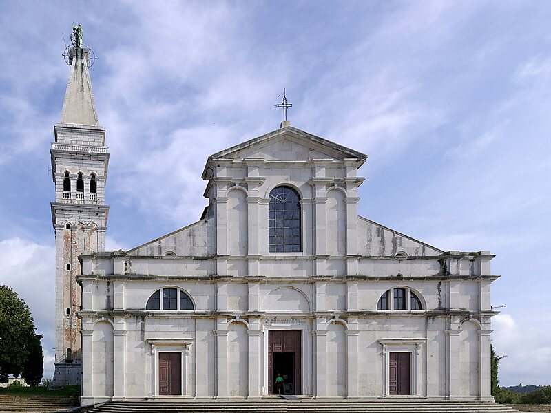
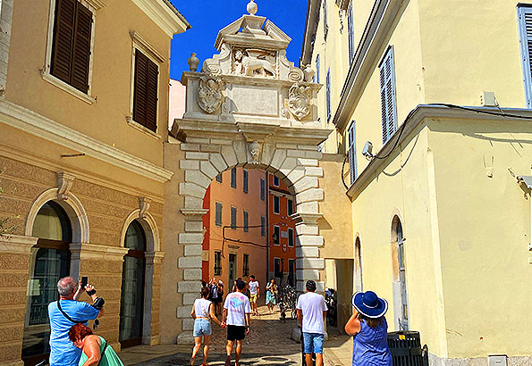
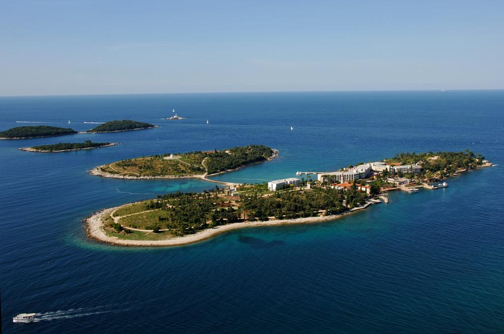

Rovinj története több mint kétezer évre nyúlik vissza. A város eredetileg egy kis szigetként alakult ki, amelyet később feltöltéssel összekötöttek a szárazfölddel. Az ókorban római település volt, majd a középkorban bizánci, később pedig velencei uralom alá került. A Velencei Köztársaság több mint ötszáz éven át irányította a várost, és ennek hatása ma is jól látszik az építészetben és a kultúrában. A 18. század végén Rovinj osztrák, majd rövid ideig francia fennhatóság alá került. A két világháború között Olaszországhoz, később Jugoszláviához tartozott. 1991 óta a független Horvátország része, és napjainkban fontos turisztikai és kulturális központ, amely megőrizte történelmi óvárosát és mediterrán hangulatát.
Rovinj legfőbb látnivalói közé tartozik a város fölé magasodó Szent Eufémia-templom, az óváros szűk utcái és színes házai, valamint a hangulatos kikötő.
Érdemes megnézni a Balbi-kaput. A Balbi-kapu Rovinj barokk városkapuja, 1680-ban épült a régi kapu helyén. A Balbi család címerével díszített bejárat az óváros fő kapuja és egyik legismertebb látnivalója.
A Szent András- és Katarina-sziget Rovinj közelében fekvő két gyönyörű adriai sziget, amelyeket rövid hajóúttal lehet elérni. Kedvelt kirándulóhely a látogatók számára.
A Block Bar Rovinj egyik legnépszerűbb fiatalos hely a városban, amely modern, letisztult belső térrel és stílusos világítással várja a látogatókat. A bár enteriőrjében a kortárs design elemei keverednek a kényelmes lounge bútorokkal, így egyszerre nyújt otthonos és energikus hangulatot. A falakat dekoratív grafikák és modern művészeti elemek díszítik, miközben a bár központi része a pult, ahol tapasztalt mixerek különleges koktélokat készítenek. Az élő zene és a DJ-estek rendszeres programjai miatt a Block Bar ideális választás mind azoknak, akik nyugodt beszélgetésre vágynak, mind azoknak, akik pezsgő, fiatalos éjszakai életre szeretnének csatlakozni. A bár kültéri része, a terasz, közvetlenül a város szívében helyezkedik el, így egyszerre élvezhető a városközpont nyüzsgése és a hangulatos, modern atmoszféra.
Harnos Vanda Alina